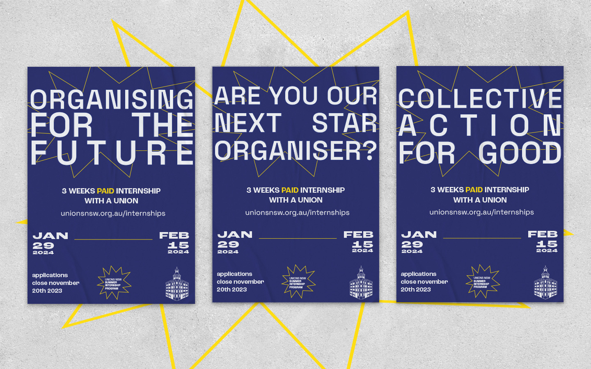

Soft branding and social content for Unions NSW's internship program, Union Summer.
This project tapped into youth culture in being inspired by club night or tour posters. Deliverables included print and digital marketing material and social media content.
Promo posters

Social media content